Living Traditions 95

Adinkra Cloth Stamping
Ghana +1 · Crafts and makingPlay preview · in the Paper & Paint of the World app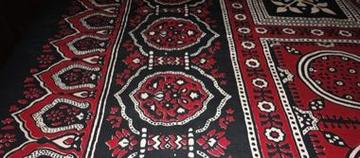
Ajrak block printing
Pakistan · Crafts and making
Al-Qatt Al-Asiri Wall Painting
Saudi Arabia · Crafts and making

Antaimoro flower paper
Madagascar · Crafts and making
Asafo Flag Appliqué
Ghana · Crafts and making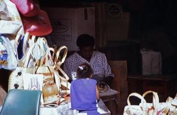
Bahamian Straw Plaiting
Bahamas · Crafts and making
Bamileke beadwork designer
Cameroon · Crafts and making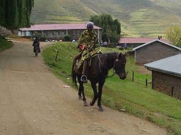
Basotho blanket pattern designer
Lesotho · Crafts and making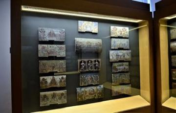
Beehive Panel Painter
Slovenia · Crafts and making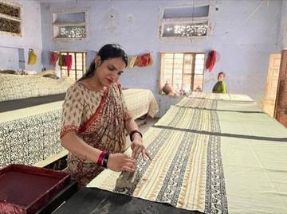
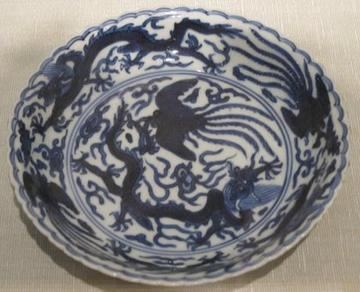
Blue-and-white porcelain painting
Worldwide · Crafts and making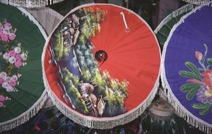
Bo Sang umbrella painting
Thailand · Crafts and making
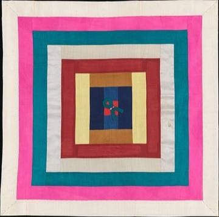
Bojagi
South Korea · Crafts and making
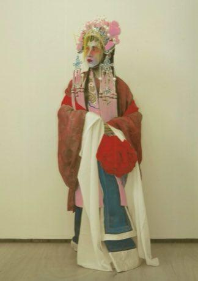
Cantonese opera role maker
Worldwide · Crafts and making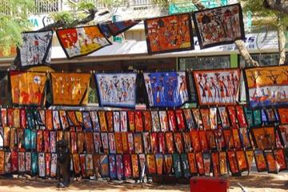
Capulana wrap cloth printing and tying
Mozambique · Crafts and making
Cheongsam Tailor Shop
China · Crafts and making
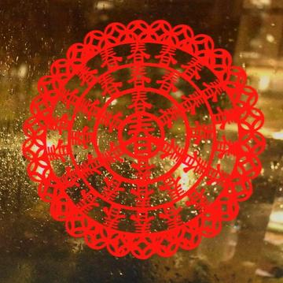

Čičmany House Ornament Painting
Slovakia · Crafts and making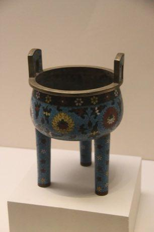
Cloisonne
China · Crafts and making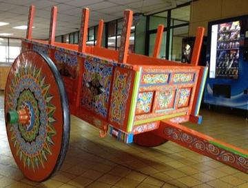

Dahomey Appliqué Panel Studio
Benin · Crafts and making
Dakar Car Rapide Livery Painter
Senegal · Crafts and making
Dala Horse Painting
Sweden · Crafts and making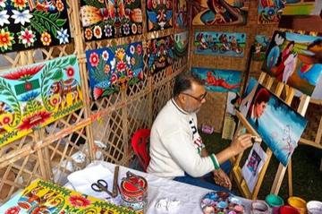
Dhaka rickshaw art
Bangladesh · Crafts and making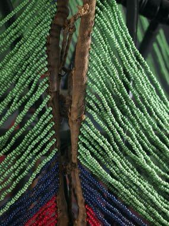
Dinka beaded corset beadwork
South Sudan · Crafts and making
Dots and Boxes
France · Crafts and making
Ebru paper marbling
Turkey · Crafts and making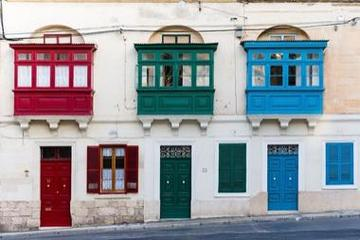
Gallarija Balcony Builder
Malta · Crafts and making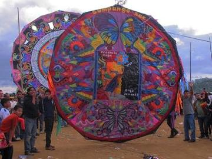
Giant Barriletes
Guatemala · Crafts and making
Imigongo geometric painting
Rwanda · Crafts and making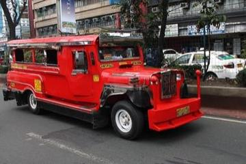
Jeepney painting
Philippines · Crafts and making
Jordanian Sand Bottle Art
Jordan · Crafts and making
Kalocsa floral painting
Hungary · Crafts and making
Kanga cloth design
Kenya · Crafts and making
Kashmiri papier-mache painting
India · Crafts and making
Keffiyeh Pattern Loom
Palestine · Crafts and making
Khayamiya Tentmaker Applique
Egypt · Crafts and making
Khokhloma Pattern Painting
Russia · Crafts and makingPlay preview · in the Paper & Paint of the World app
Kokeshi doll painting
Japan · Crafts and making
Korhogo Painted Cloth Studio
Cote d'Ivoire · Crafts and making
Kuba cloth pattern puzzle
DR Congo · Crafts and makingPlay preview · in the Paper & Paint of the World app
Kumihimo Braid Disk
Japan · Crafts and making

Kurpie Layered Paper Cutting
Poland · Crafts and making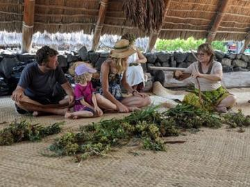
Lei making
United States · Crafts and making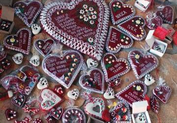
Licitar Heart Decorator
Croatia · Crafts and making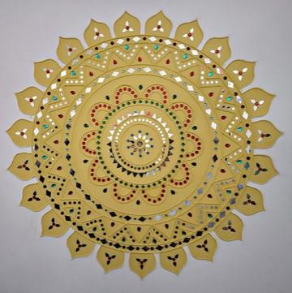
Lippan kaam mud-and-mirror relief
India +1 · Crafts and makingPlay preview · in the Paper & Paint of the World app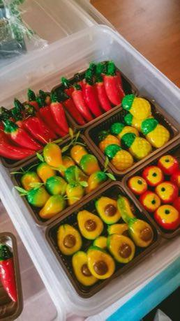
Luk chup
Thailand · Crafts and making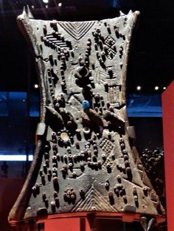
Lukasa memory board pattern game
Worldwide · Crafts and makingPlay preview · in the Paper & Paint of the World app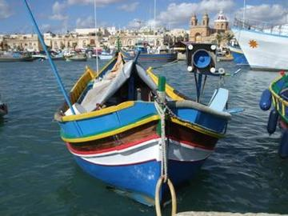
Luzzu Boat Painter
Malta · Crafts and making
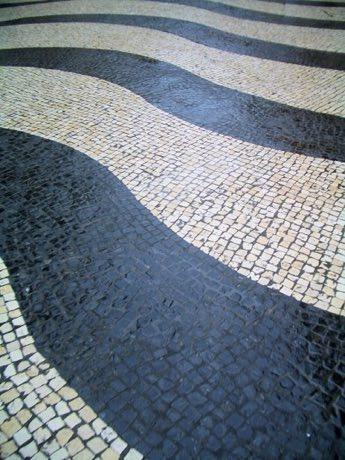
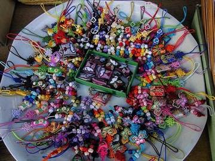
Maedeup
South Korea · Crafts and making
Mashrabiya Lattice Joinery
Egypt +1 · Crafts and makingPlay preview · in the Paper & Paint of the World app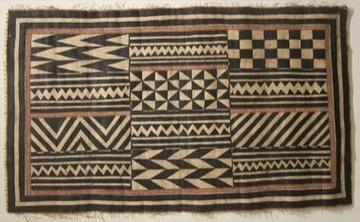
Masi bark-cloth stencil printing
Fiji · Crafts and making
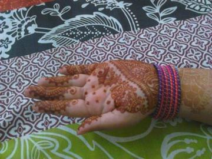
Mehndi henna pattern drawing
India +1 · Crafts and makingPlay preview · in the Paper & Paint of the World app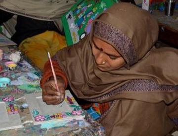
Mithila folk painting
Nepal +1 · Crafts and making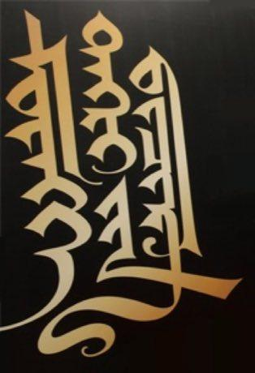
Mongol bichig
Mongolia · Crafts and making
Muqarnas stalactite vault builder
Iran · Crafts and making
Ndebele geometric wall painting
South Africa · Crafts and makingPlay preview · in the Paper & Paint of the World app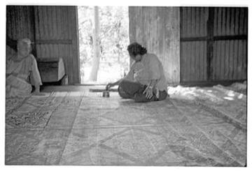
Ngatu bark-cloth pattern rubbing
Tonga · Crafts and making
Nubian house painting
Egypt · Crafts and making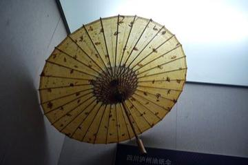
Oil-paper umbrella making
China · Crafts and making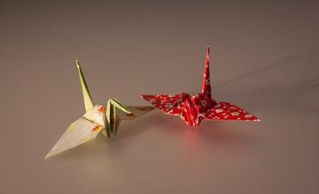

Oualata Wall Painting
Mauritania · Crafts and making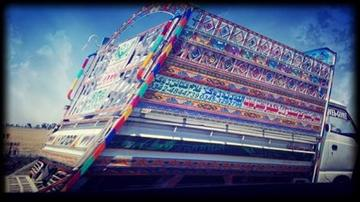
Pakistani truck art
Pakistan +1 · Crafts and makingPlay preview · in the Paper & Paint of the World app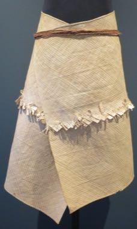
Pandanus mat plaiting
Kiribati · Crafts and making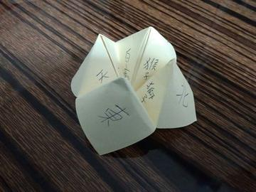
Paper Fortune Teller
United Kingdom +3 · Crafts and makingPaper Plane Flight Contest
Japan · Crafts and making
Paper Soccer
Poland +2 · Crafts and making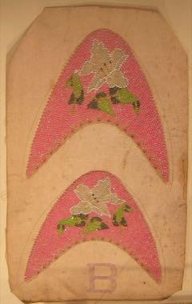
Peranakan beaded slippers
China +1 · Crafts and making
Petrykivka painting
Ukraine · Crafts and makingPollera and Tembleques
Panama · Crafts and making
Qamariya Gypsum Window Designer
Yemen · Crafts and making
Ribbon-Pole Plaiting Dance
United Kingdom +4 · DancesPlay preview · in the Music & Dance of the World app
Rosemaling
Norway · Crafts and making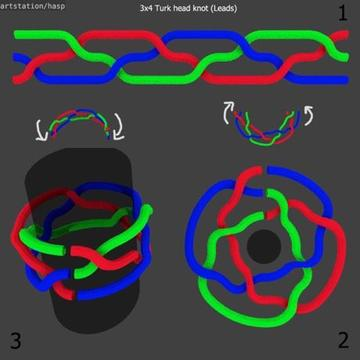
Sailor's Knotwork and Turk's Head
Worldwide · Crafts and making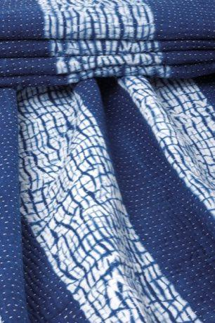
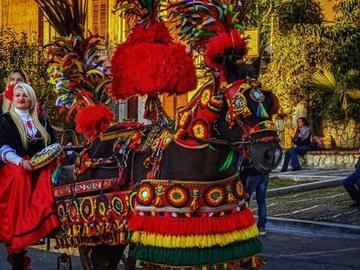
Sicilian Cart Painting
Italy · Crafts and making
Sierra Leone Country Cloth Strip Loom
Sierra Leone · Crafts and making
Sprouts
United Kingdom · Crafts and making
Stamp Designer and Perforator
Liechtenstein · Crafts and makingTap-Tap Bus Painting
Haiti · Crafts and making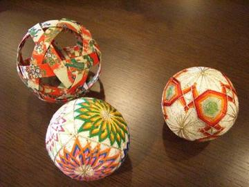
Temari Thread-Ball Patterns
Japan · Crafts and makingPlay preview · in the Paper & Paint of the World app

Tingatinga painting
Tanzania · Crafts and making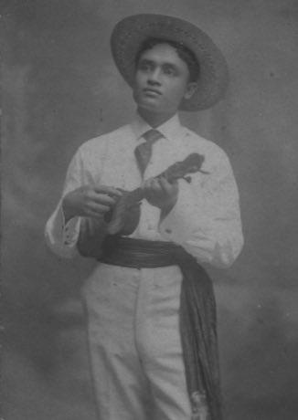
Ukulele strum-along
United States +1 · Musical instrumentsPlay preview · in the Music & Dance of the World app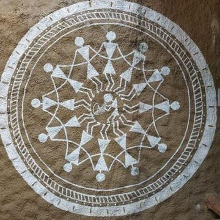
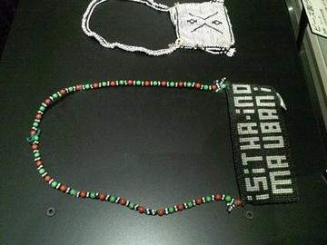
Zulu beadwork letters
South Africa · Crafts and makingPlay preview · in the Paper & Paint of the World app